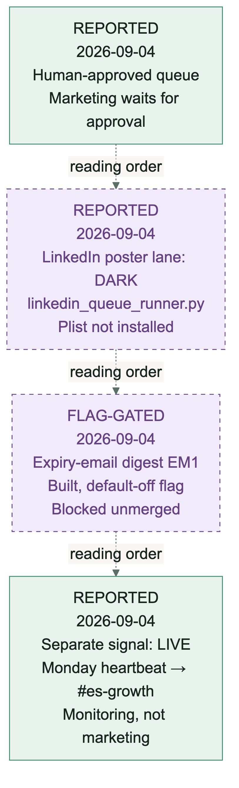

Marketing
DARKLIVEREPORTED Station snapshot observed . See the inventory for the latest machine reading.
The honest station. The marketing-posts row in how it works is a human-approved queue marked in development: nothing in it fires by itself. A LinkedIn poster lane exists at ~/es-ops/marketing/linkedin_queue_runner.py, but its launchd plist is not installed. A daily expiry-email digest (EM1) is built and blocked unmerged behind a default-off flag. The one live growth-adjacent signal is the Monday heartbeat to #es-growth, and that is a monitor, not marketing output.
The Monday heartbeat to #es-growth. Everything else waits: designed, gated, and dark until the owner turns it on.
Post without owner approval, or let a default-off flag flip itself. Fail-closed defaults are the lesson, not the embarrassment.
~/es-ops/marketing/, the how-it-works marketing row, and the Monday heartbeat line in #es-growth.

Mermaid source (marketing-lane.mmd)
flowchart TB
%%{init: {"theme":"base","themeVariables":{"fontFamily":"Arial","fontSize":"18px","primaryColor":"#e8f3ee","primaryTextColor":"#17241f","primaryBorderColor":"#3d8b6a","lineColor":"#5c6f66"},"flowchart":{"htmlLabels":false,"curve":"linear","nodeSpacing":16,"rankSpacing":28,"padding":12}}}%%
Q["REPORTED<br/>2026-09-04<br/>Human-approved queue<br/>Marketing waits for approval"]
LK["REPORTED<br/>2026-09-04<br/>LinkedIn poster lane: DARK<br/>linkedin_queue_runner.py<br/>Plist not installed"]
EM["FLAG-GATED<br/>2026-09-04<br/>Expiry-email digest EM1<br/>Built, default-off flag<br/>Blocked unmerged"]
HB["REPORTED<br/>2026-09-04<br/>Separate signal: LIVE<br/>Monday heartbeat → #es-growth<br/>Monitoring, not marketing"]
Q -. reading order .-> LK -. reading order .-> EM -. reading order .-> HB
classDef dark fill:#f1eafa,stroke:#654280,stroke-dasharray:5,color:#654280;
class LK,EM dark;